SentinelSCADA › Tutorial › Chapter 2
In this chapter we create a new project and set some basic parameters. Before we do that, we need to know how to start and stop SentinelSCADA.
After installation with the Haggis Installer you will have a desktop shortcut to SentinelLauncher. It is critical that you start this app, and not SentinelServer.
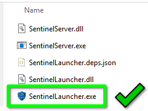
SentinelLauncher starts the tray icon process and, among other duties, manages SentinelServer: restarts, project switching and the like.
Once started, your default web browser opens at the localhost address and port you have configured. External clients on the local LAN must open a browser at the static IP address and port of the server PC.
To stop the server, find the tray icon, right-click it and choose Quit Sentinel Server.
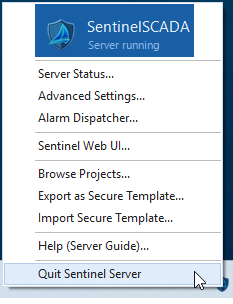
What happens next depends on how the loaded project is configured, in particular its security mode (XML, SQLite or Keycloak). In a plain XML mode project, by default you are simply asked “are you sure?”. It may take a moment for the dialog to appear, as the Launcher has some checks to make first.
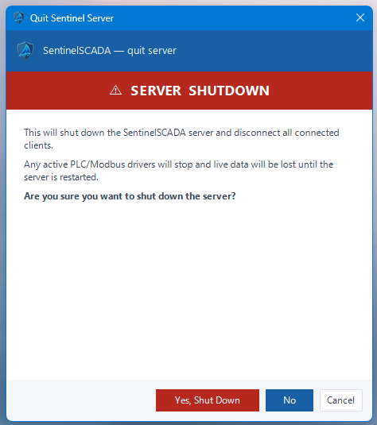
Depending on how your project is set up, you may need to supply an Admin or Engineer credential to stop the server. In Keycloak mode, which is highly administered and audited, you must also supply a valid reason for the shutdown. That reason is cryptographically logged against your user name in a tamper-proof database, as part of the audit trail.
SentinelLauncher and SentinelServer run from Program Files, but your working data is stored in an %APPDATA% folder for the Windows account in use. That includes every project, with its sub-folders, that you create or import.
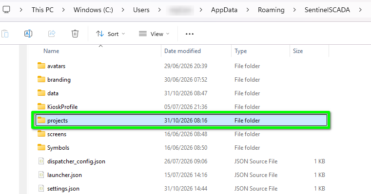
If you dig around you will find that the vast majority of the files are JSON, including project files, screen layouts and user settings. There are many security-related key files and plenty of SVG image files, and there will be some Structured Text (ST) logic files once you start using the relevant features. The only XML files relate to XML mode security.
The first time you open the web client you will find the default project. This is an empty, blank template to get you started, and you are free to edit and build on it. Today we use it as the starting point for creating a new project, to see how the process works.
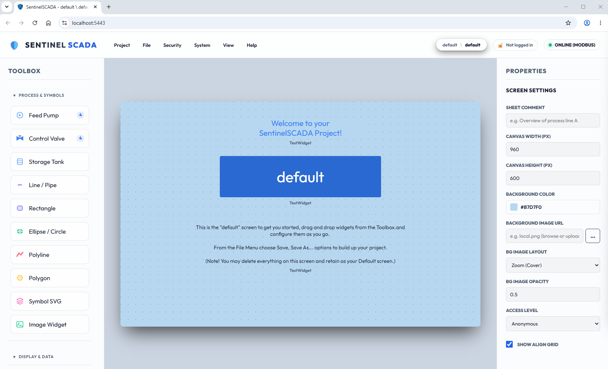
From the Project menu, choose New project…
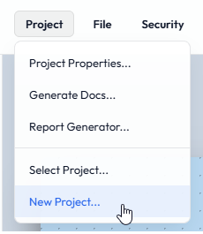
You are greeted with a log-in request. The current project (default) wants you to log in before you can proceed. You are not creating a login for the new project: you are showing that you have the authority to create a new project and unload the existing one, bearing in mind that other clients may be connected to it.
The default credentials are:
| Username | Password |
|---|---|
| admin | admin |
| engineer | engineer |
| operator | operator |
| guest | guest |
Type admin for the Username and admin for the Password.
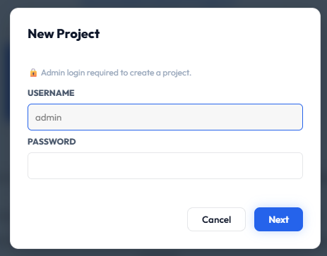
Be as creative as you like, but observe the character limits and conventions shown on the dialog. We are using BoilerHouse. A name is required, and the dialog tells you if it is missing.
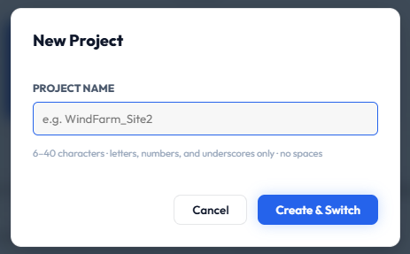
Press Create & Switch. You are asked to confirm the intended action. If you press Cancel you go back to the naming dialog.
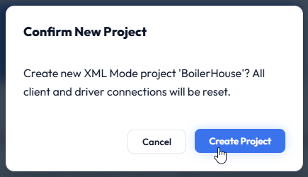
A browser pop-up now confirms that the new project will be loaded and that any clients will be disconnected, where one of those clients is you. Press OK.
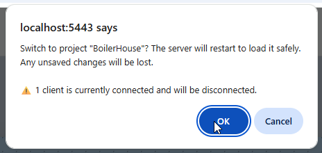
The server runs through a lot of processes to make the switch.
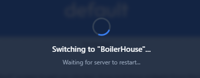
At any time, you can choose another project from Project > Select Project…
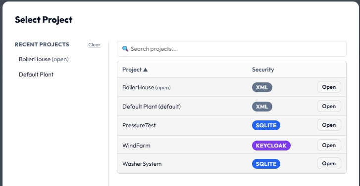
If you are challenged for Admin or Engineer credentials…
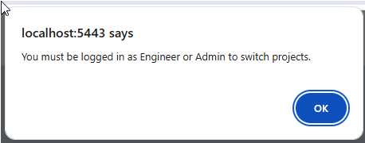
…choose Security > Log In…
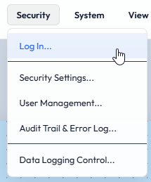
Enter your credentials.
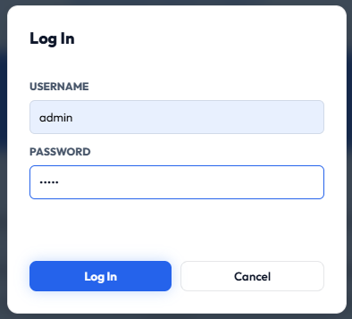
Then try the switch again.
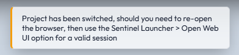
One way or another, you should now have your new project open and ready to explore. At the top right of the client are the status pills:
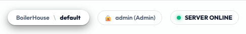
By default we are in Design Mode. As in Chapter 1, Design Mode is for everything to do with design and configuration, Run Mode is live working with ready access to all the tools, and Kiosk Mode is the full-flight, public-facing presentation for the real world. You change modes from the View menu.
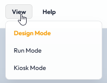
A SCADA/HMI project is made up of screens, widgets, drivers and data, user and security configuration.
On the left is the Toolbox. Its sections group widgets by function. A widget is simply a control you drag from the Toolbox onto a screen, then configure in the Properties Panel on the right. Clicking a section closes the others and lists the widgets it holds.
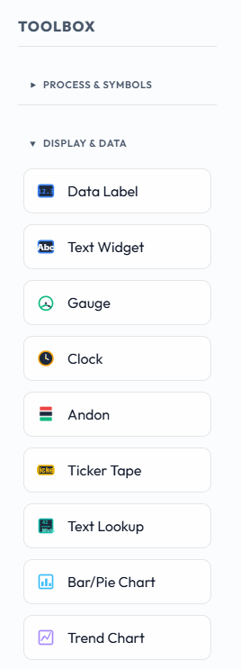
There are a lot of widgets, with a lot of settings. Type any widget name into the help system search bar for detailed information about it and its settings.
To place a widget, drag it onto the screen. We will use a Gauge.
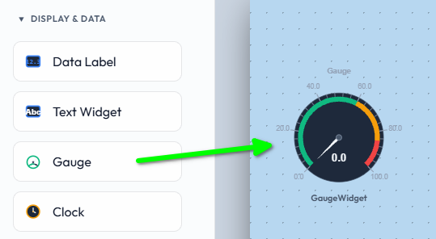
With the gauge selected, the Properties Panel shows collapsible sections that group related settings. The most important basic properties are LABEL and DATA TAG BIND.
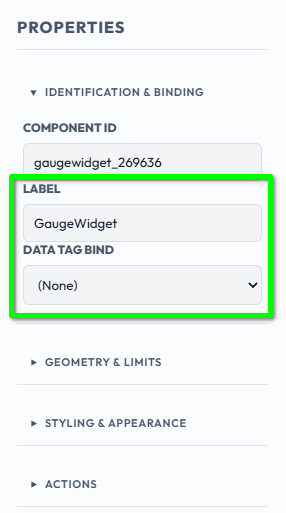
The label is what is displayed beside the widget, if anything. The default here is “GaugeWidget”; you could change it to “LPHW Flow Temp” or anything else that conveys the gauge's purpose. The label is a useful reference for you, the designer. However, once a widget has been bound to a Tag, the Tag name replaces that text, if you entered any.
The Data Tag Bind is the value the gauge displays. It can come from the built-in Modbus Simulator, a real Modbus device, or another networked source set up in the driver configuration. Let's go and get a source value.
With no hardware attached, you can still set up and test a SentinelSCADA project. A comprehensive Modbus device simulator is included, with an array of self adjusting values (both ramping and random), and also a user-adjustable range of binary, word, double-word and floating-point values.
From the System menu choose Device/Tag Setup…
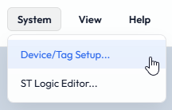
With no devices or tags yet, our new project's dialog looks like this.
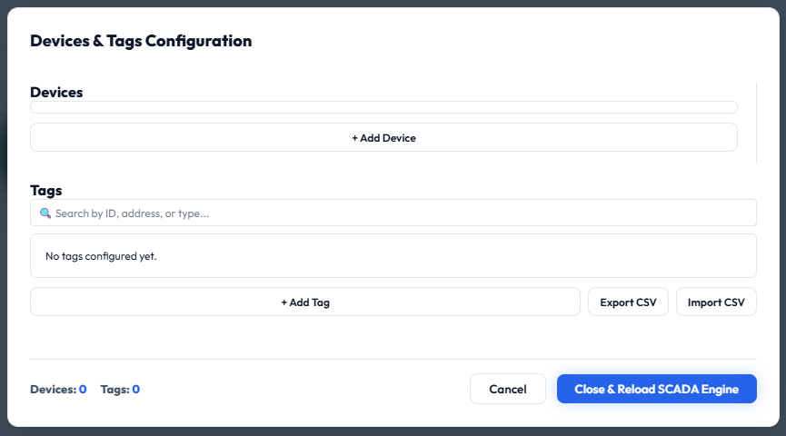
Press + Add Device. In the dialog that opens, choose Modbus SIM from the DRIVER TYPE list.
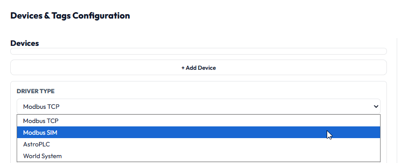
The device settings change to show the options for Modbus SIM.
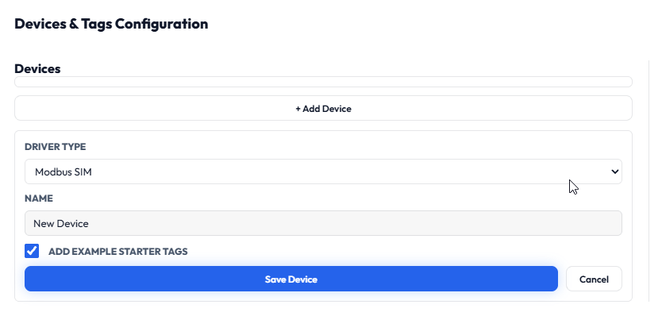
Leave Add Example Starter Tags ticked and press Save Device.
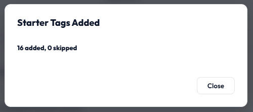
The dialog now shows the 16 tags that were added. They are a mix of tags that change on their own, such as values that ramp up and down and binaries that toggle between 1 and 0, which give you test values. There are also user values that you can set, perhaps with a Knob widget, and read back with a Gauge. The options are extensive and well rounded to help you design your project.
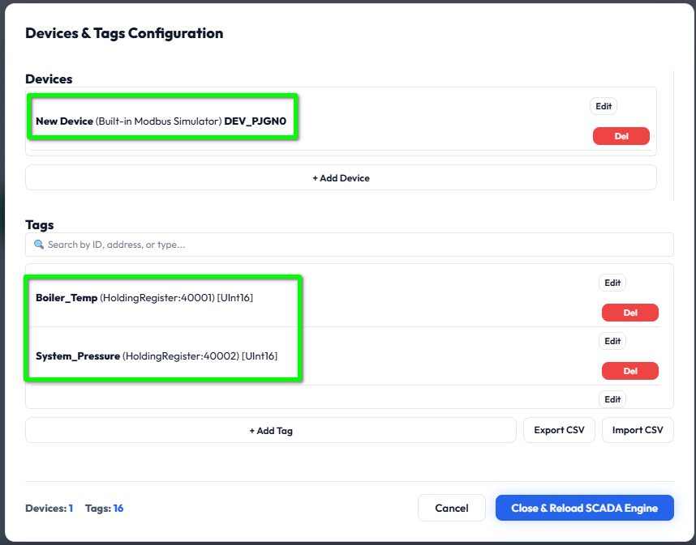
A unique Device ID has been assigned. This safeguards against duplicate device names, even for different devices. For now, we focus on the simulated Boiler_Temp value.
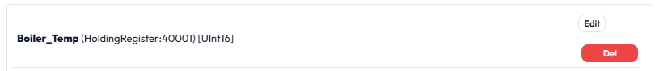
Press Close & Reload SCADA Engine. This reloads the driver system and the data system, and updates every list that needs to know about the new device and tags. A message confirms success.
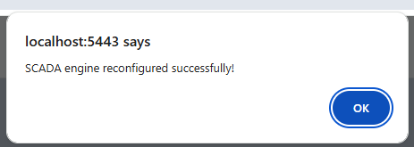
Finally, bind the simulated tag value to the gauge. Select the gauge, then in its properties open the Data Tag Bind list and choose Boiler_Temp.
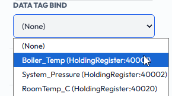
The gauge label updates at once and the value starts changing. It keeps updating, as the Modbus SIM engine regenerates the value continuously.
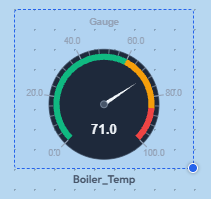
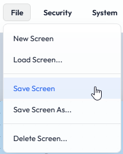
The screen save is confirmed to you.
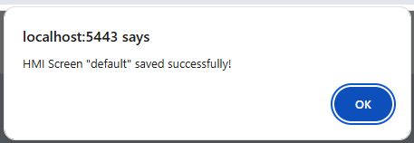
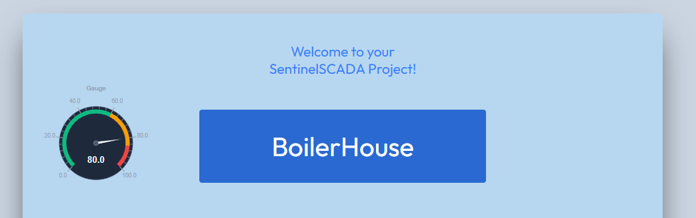
If you did choose View > Kiosk Mode, you are locked into the display with no way back, as described earlier. Stop the server from the tray icon, close the browser and restart everything. We sort that out in the next chapter.
%APPDATA% folder, mostly as JSON files.We have created a starter project, added a gauge, and bound it to a tag from a Modbus Simulator that we also added. In the next chapter we add a Session Panel widget, which lets people log in to the project and in turn lets us leave Kiosk Mode on demand.